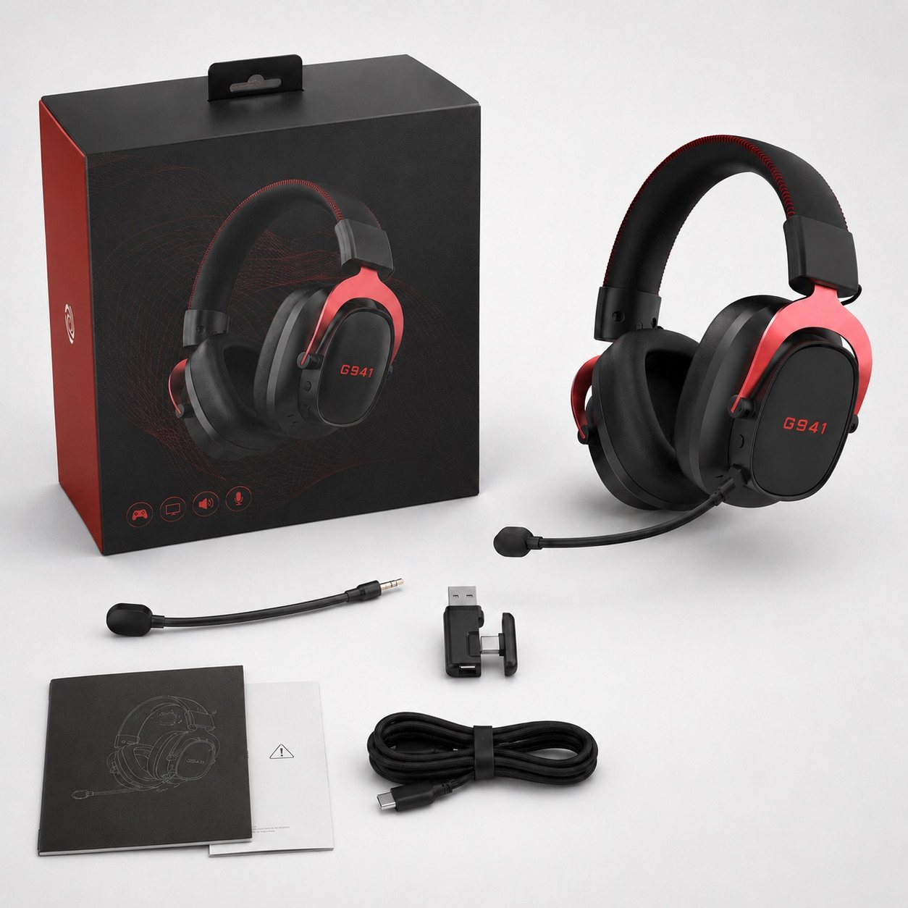
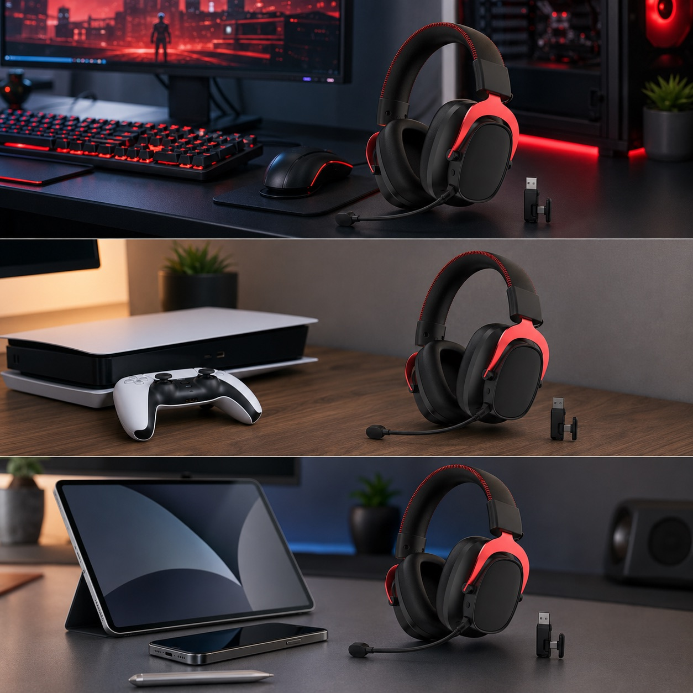
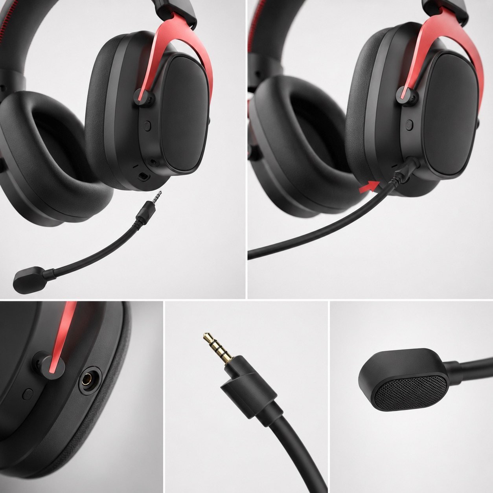
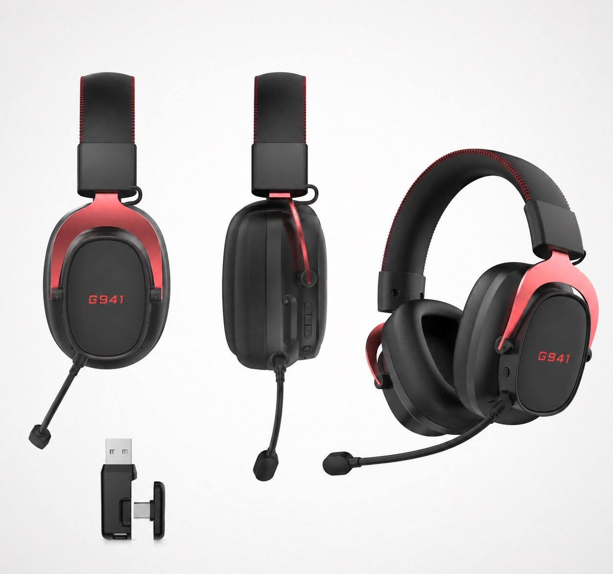
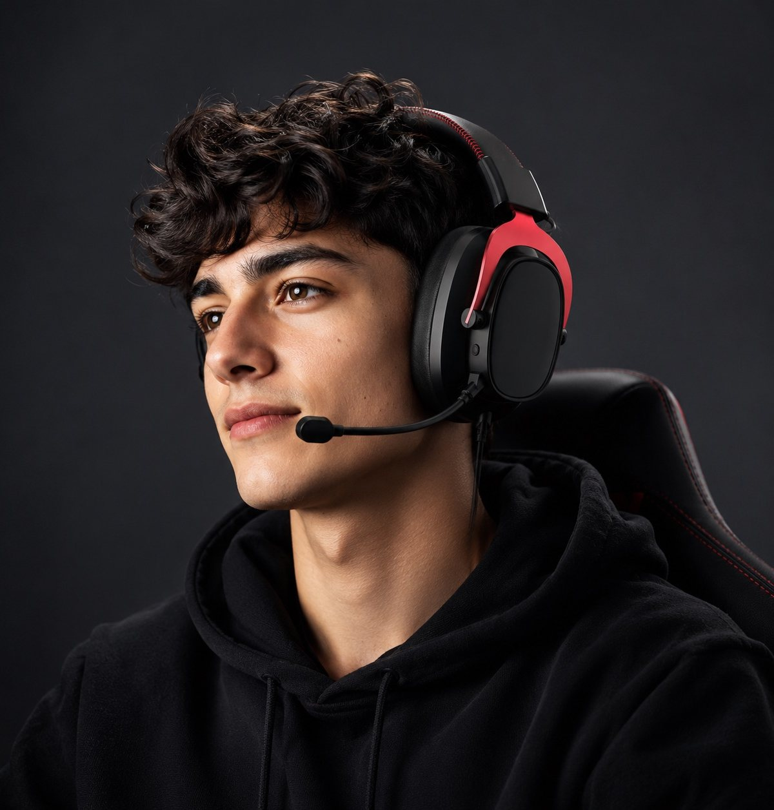
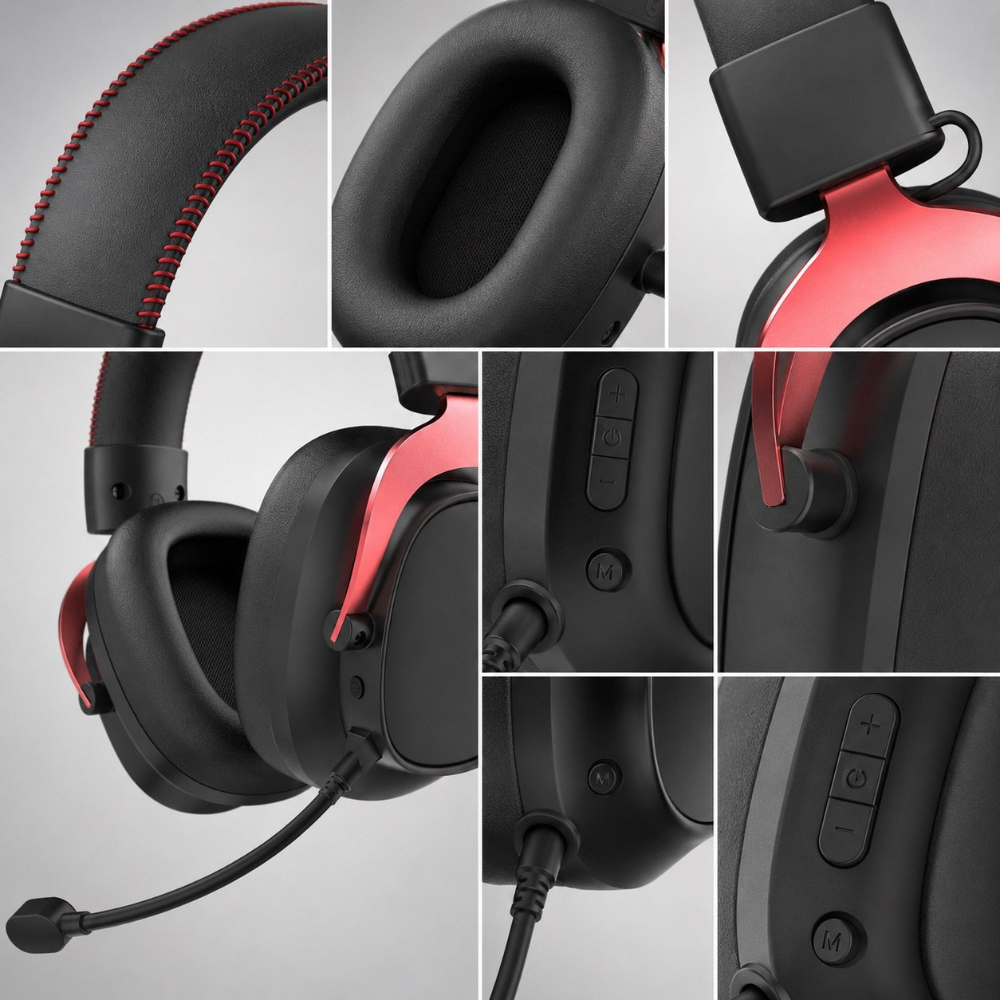
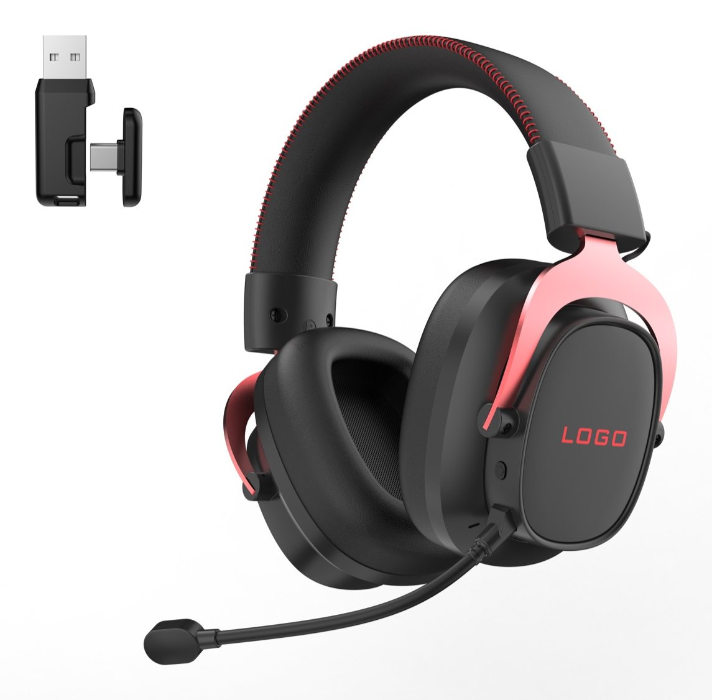
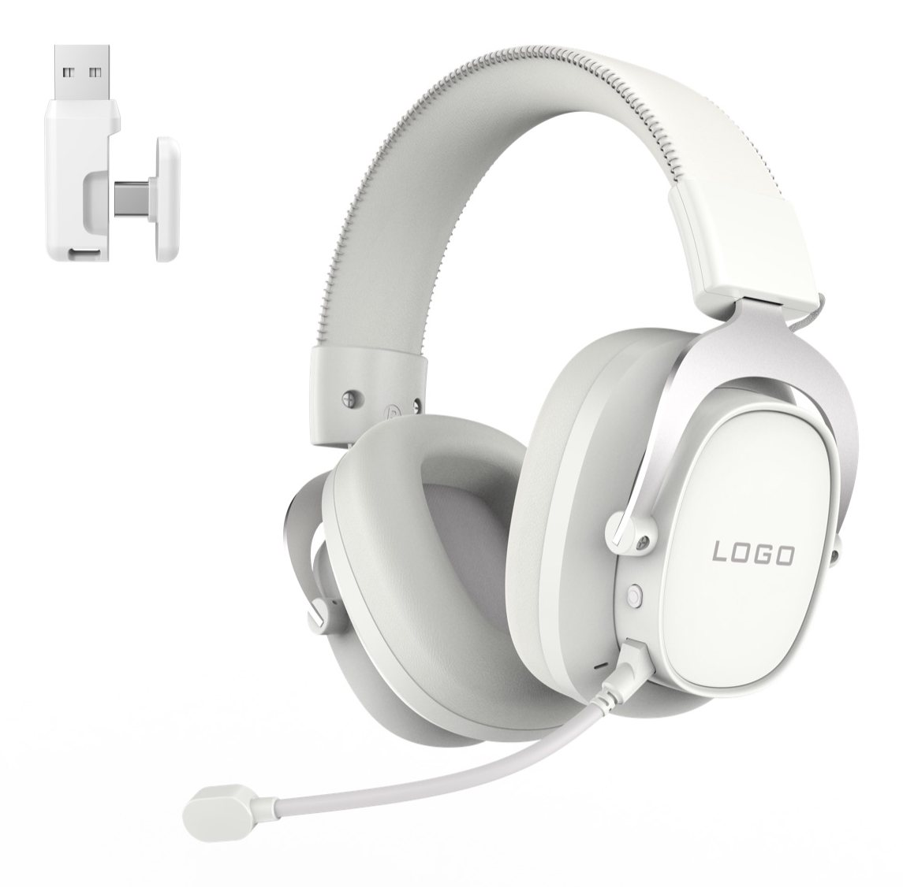

Packaging and accessory reference
The no-pouch reference image shows the box, headset, microphone, receiver, cable and printed materials for sample discussion.

G941 2.4G Bluetooth wired gaming headset
TALRIVO G941 is a tri-mode wireless gaming headset direction for importer and private-label sample planning, including 2.4G, Bluetooth and wired connection positioning, a 50mm driver, 1000mAh battery, detachable boom microphone, receiver detail and black-red or white visual directions.

Short answer
G941 is a TALRIVO wireless gaming headset model page for buyers comparing a 2.4G, Bluetooth and wired headset direction before requesting samples. The page documents current product-sheet details, receiver and microphone references, black-red and white visual options, packaging notes and official video links.
Product videos
Review the new lifestyle product showcase and the microphone demonstration on the official TALRIVO YouTube channel, then use this page for model details and sample discussion.
Product image evidence
Use these supplied product images to review the receiver, detachable microphone, fit and control details. Accessory and packaging contents should be confirmed against the final selected sample version.

The no-pouch reference image shows the box, headset, microphone, receiver, cable and printed materials for sample discussion.

Close-up views help buyers review the microphone plug, connection point and boom microphone structure.

The overview image shows the G941 black-red headset direction with the USB receiver for buyer discussion.
PC, console, tablet and phone scenes support the product positioning without adding unsupported performance claims.

The wearing image gives a clear visual reference for headset size, microphone placement and over-ear fit.

Detail images show the stitched headband, ear cushion, side frame, buttons and connection area for sample review.
Buyer verification
The supplied 2026 catalogue and current product-sheet specification now support model-level comparison. Buyers should still confirm the selected ANC or tri-mode sample version, accessories and packaging before approval.
Key points
Use the current product-sheet data, images and official videos to compare G941 before sampling.
The current sheet lists a 50mm driver, 32-ohm impedance and a 20Hz-20kHz frequency response.
Listed playback time is approximately 50 hours with lighting off, with approximately 3-4 hours listed for charging.
Black-red supports stronger gaming styling, while the white version gives a cleaner product direction for softer assortments.
2.4G, Bluetooth and wired positioning is paired with a detachable boom microphone for buyer sample evaluation.
Documented specifications
Confirm the selected ANC or tri-mode version, receiver, accessories and packaging on the final sample.
Sample evaluation
G941 is useful when a buyer needs a stronger hero-style tri-mode headset direction. Keep the sample review tied to the exact receiver, color, microphone, package contents and selected version.
Product images
Use these image notes to compare visual direction, USB-C receiver detail, boom microphone and earcup logo area.

Red stitching and side frame accents create a stronger gaming look for product display and social posts.

The white colorway gives a quieter product style for customers comparing softer visual options.
The receiver shown in the product images gives a concrete visual point for 2.4G wireless headset explanation.
The earcup logo area is easy to discuss for logo direction, product photography and packaging planning.
Customization
Product fit
Use these points to understand where this model fits in a product collection.
Product FAQ
G941 is a tri-mode wireless gaming headset direction for buyers comparing 2.4G, Bluetooth and wired use, receiver detail, detachable boom microphone, color options and product videos.
The current sheet lists a 50mm driver, 32-ohm impedance, 20Hz-20kHz response, 1000mAh battery, approximately 50 hours without lighting, up to 10 meters and approximately 20ms 2.4G latency.
G941 is positioned for 2.4G wireless, Bluetooth and wired use. Confirm the receiver and accessory set on the selected sample.
Check the receiver, Bluetooth pairing, wired route, microphone demonstration context, wearing fit, color direction, controls, package contents, branding area and document questions for the selected version.
Yes. Share target market, sales channel, target devices, quantity range, sample timing, branding and packaging needs.
Black-red and white directions are shown. Logo, packaging, manual language and accessory requirements can be reviewed after the base sample is confirmed.
Related pages
Share the destination market, channel, target devices, quantity range, selected version, sample timing, sample feedback and customization scope for a G941 review.